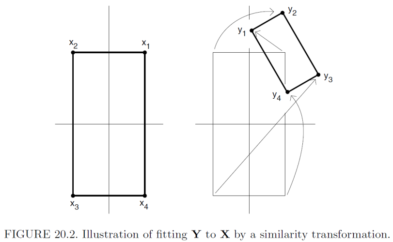

Week06: Geographic Coordinate Transformations
1 Geographic Coordinate Transformations
1.1 Motivation
Many GIS operations can be expressed in terms of matrix and vector operations in a Euclidian coordinate system.
Examples:
- geo-referencing a map to a digitizer or image to its world coordinates,
- rubber sheeting,
- merging several map layers into one layer
All these operations perform a mapping of a point \((x_a, y_a)^T\) in an arbitrary coordinate system into a point \((x_t, y_t)^T\) in a target coordinate system by applying the transformation functions \(f_x\) and \(f_y\)
\[x_t = f_x(x_a, y_a) \text{ and } y_t = f_y(x_a, y_a)\]
1.2 Polynomial Specification
Both functions can be specified as polynomial functions in the points \((x_a, y_a)^T\). For example, linear or first order polynomial transformations are
\[x_t = f_x(x_a, y_a) = b_{0,x} + b_{1,x} \cdot x_a + b_{2,x} \cdot y_a\] \[y_t = f_y(x_a, y_a) = b_{0,y} + b_{1,y} \cdot x_a + b_{2,y} \cdot y_a\]
Matching coordinates of \((x_a, y_a)^T\) with \((x_t, y_t)^T\) for points that both denote identical locations allow the estimation of the unknown transformation parameters by two linear regression models
\[x_t = \underbrace{b_{0,x} + b_{1,x} \cdot x_a + b_{2,x} \cdot y_a}_{\hat{x}_t} + e_x \text{ and}\]
\[y_t = \underbrace{b_{0,y} + b_{1,y} \cdot x_a + b_{2,y} \cdot y_a}_{\hat{y}_t} + e_y\]
This regression specification cannot accommodate any constraints such as identical scaling of the \(x_a\)- and \(y_a\)-coordinate or only an orthogonal rotation of the \((x_a, y_a)^T\) coordinate system.
The linear specification requires at least 3 non-collinear points to estimate the transformation parameters.
To allow for curvature in a non-Euclidian metric, a quadratic specification \(x_t = b_{0,x} + b_{1,x} \cdot x_a + b_{2,x} \cdot y_a + b_{3,x} \cdot x_a^2 + b_{4,x} \cdot x_a \cdot y_a + b_{5,x} \cdot y_a^2 + e_x\), analogue for the \(y_t\)-coordinate, respectively, needs at least 6 points.
Certainly, the more well-specified match points are available, the better the transformation of the arbitrary coordinate system into the target coordinate system becomes.
In general, the match points in both the target and the arbitrary system should be spread out as much as possible.
1.3 Residual vectors
A residual vector \(\begin{pmatrix} e_x \\ e_y \end{pmatrix} = \begin{pmatrix} x_t \\ y_t \end{pmatrix} - \begin{pmatrix} \hat{x}_t \\ \hat{y}_t \end{pmatrix}\) arises [a] when there is some uncertainty in exactly matching the points \((x_a, y_a)^T\) and \((x_t, y_t)^T\) to a joint location or [b] if the true transformation functions \(f_x\) and \(f_y\) deviate somewhat from one specified in polynomial operationalization.
It is highly advisable to map the residual vectors. Any pattern in these vectors hints at elevated local uncertainties of the joint match points or indicates what the correct functional form of the true transformation functions may be.
1.4 Matrix Specification
A linear transformation of an arbitrary coordinate system into the target system can be written in matrix notation:
\[\begin{pmatrix} x_t \\ y_t \end{pmatrix} = \begin{pmatrix} b_{0,x} \\ b_{0,y} \end{pmatrix} + \begin{pmatrix} b_{1,x} & b_{2,x} \\ b_{1,y} & b_{2,y} \end{pmatrix} \cdot \begin{pmatrix} x_a \\ y_a \end{pmatrix}.\]
This specification has the drawback that the translation \(\begin{pmatrix} b_{0,x} \\ b_{0,y} \end{pmatrix}\) and the rotation \(\begin{pmatrix} b_{1,x} & b_{2,x} \\ b_{1,y} & b_{2,y} \end{pmatrix}\) are handled by two operations, [a] an additive and [b] a multiplicative operation, respectively.
1.5 Rigid Transformations (preserves size and angles)
A way to handle all operations as matrix multiplications is to express a point \((x, y)^T\) in homogenous coordinates \((x, y, 1)^T\):
Translation: \(\begin{pmatrix} x_t \\ y_t \\ 1 \end{pmatrix} = \begin{pmatrix} 1 & 0 & t_x \\ 0 & 1 & t_y \\ 0 & 0 & 1 \end{pmatrix} \cdot \begin{pmatrix} x_a \\ y_a \\ 1 \end{pmatrix}\)
Orthogonal Rotation: \(\begin{pmatrix} x_t \\ y_t \\ 1 \end{pmatrix} = \begin{pmatrix} \cos(\theta) & -\sin(\theta) & 0 \\ \sin(\theta) & \cos(\theta) & 0 \\ 0 & 0 & 1 \end{pmatrix} \cdot \begin{pmatrix} x_a \\ y_a \\ 1 \end{pmatrix}\). The rotation depends on the origin \((o_x, o_y)^T\) of the coordinate system.
Orthogonality implies \(\begin{pmatrix} 1 & 0 & 0 \\ 0 & 1 & 0 \\ 0 & 0 & 1 \end{pmatrix} = \begin{pmatrix} \cos(\theta) & -\sin(\theta) & 0 \\ \sin(\theta) & \cos(\theta) & 0 \\ 0 & 0 & 1 \end{pmatrix}^T \cdot \begin{pmatrix} \cos(\theta) & -\sin(\theta) & 0 \\ \sin(\theta) & \cos(\theta) & 0 \\ 0 & 0 & 1 \end{pmatrix}\).
The combined transformation \(\begin{pmatrix} \cos(\theta) & -\sin(\theta) & 0 \\ \sin(\theta) & \cos(\theta) & 0 \\ 0 & 0 & 1 \end{pmatrix} \cdot \begin{pmatrix} 1 & 0 & t_x \\ 0 & 1 & t_y \\ 0 & 0 & 1 \end{pmatrix}\) are rigid-body transformations that preserve angles and length of lines connecting points in the arbitrary and the target coordinate systems.
Consequently, in rigid transformations the shape (i.e., angles) and size (i.e., area) are preserved.
1.6 Affine transformations (preserves parallel lines)
Scaling: \(\begin{pmatrix} x_t \\ y_t \\ 1 \end{pmatrix} = \begin{pmatrix} s_x & 0 & 0 \\ 0 & s_y & 0 \\ 0 & 0 & 1 \end{pmatrix} \cdot \begin{pmatrix} x_a \\ y_a \\ 1 \end{pmatrix}\). Scaling depends on the origin \((o_x, o_y)^T\).
Reflections: \(\begin{pmatrix} x_t \\ y_t \\ 1 \end{pmatrix} = \begin{pmatrix} -1 & 0 & 0 \\ 0 & 1 & 0 \\ 0 & 0 & 1 \end{pmatrix} \cdot \begin{pmatrix} x_a \\ y_a \\ 1 \end{pmatrix}\) This is a reflection of the \(x\)-coordinate.
Alternatively, \(\begin{pmatrix} x_t \\ y_t \\ 1 \end{pmatrix} = \begin{pmatrix} 1 & 0 & 0 \\ 0 & -1 & 0 \\ 0 & 0 & 1 \end{pmatrix} \cdot \begin{pmatrix} x_a \\ y_a \\ 1 \end{pmatrix}\) is a reflection of the \(y\)-coordinate.
Both transformations can be combined into a joint reflection of the \(x\)- and \(y\)-coordinates. Reflections are a special case of scaling.
Shear: \(\begin{pmatrix} x_t \\ y_t \\ 1 \end{pmatrix} = \begin{pmatrix} 1 & a & 0 \\ 0 & 1 & 0 \\ 0 & 0 & 1 \end{pmatrix} \cdot \begin{pmatrix} x_a \\ y_a \\ 1 \end{pmatrix}\) and \(\begin{pmatrix} x_r \\ y_r \\ 1 \end{pmatrix} = \begin{pmatrix} 1 & 0 & 0 \\ b & 1 & 0 \\ 0 & 0 & 1 \end{pmatrix} \cdot \begin{pmatrix} x_a \\ y_a \\ 1 \end{pmatrix}\) transforms a square into a parallelogram.
Shear and scaling do not necessarily preserve the angle between lines in a configuration.
The set of scaling, reflections and shear transformations as well as the rigid transformations, i.e., translations and orthogonal rotations, define the class of affine transformations.
In affine transformations parallel lines remain parallel.
1.7 The combination of elementary transformations
For each elementary transformation there exists an inverse transformation that reverses the transformation. For instance, the inverse translation becomes \(\begin{pmatrix} 1 & 0 & t_x \\ 0 & 1 & t_y \\ 0 & 0 & 1 \end{pmatrix}^{-1} = \begin{pmatrix} 1 & 0 & -t_x \\ 0 & 1 & -t_y \\ 0 & 0 & 1 \end{pmatrix}\).
The elementary transformation can be combined into a sequence of transformation to achieve the desired mapping of the arbitrary coordinate system into the target coordinate system. Usually, the order of the transformation is important because matrix multiplication is non-commutative.
The document TRANSFORM2D.PDF provides a detailed outline or transformations in homogenous coordinates. The concept of homogenous coordinates can be extended into the 3D space, which then allows to project 3D objects into the plane of the 2D coordinate system.
1.8 Specification of a line
Let \(\mathbf{s} = (x_S, y_S)^T\) and \(\mathbf{e} = (x_E, y_E)^T\) be the starting and end points of a vector \(\vec{\mathbf{se}}\), respectively. Both points therefore define a directed line.
Any point \(\mathbf{p} = (x_p, y_p)^T\), for which the implicit equations
\[A \cdot x_p + B \cdot y_p + C = 0 \Leftrightarrow \frac{A}{C} \cdot x_p + \frac{B}{C} \cdot y_p = -1\]
are satisfied will be on this line.
The coefficients \(A\), \(B\), and \(C\) of the implicit equation are defined by the end and starting points through the determinants
\[A = \begin{vmatrix} 1 & y_S \\ 1 & y_E \end{vmatrix}, B = \begin{vmatrix} x_S & 1 \\ x_E & 1 \end{vmatrix}, \text{ and } C = \begin{vmatrix} x_S & y_S \\ y_S & y_E \end{vmatrix}.\]
If a point is not on the line, then two conditions hold with regards to the direction of the vector \(\vec{\mathbf{se}}\):
- If \(A \cdot x_p + B \cdot y_p + C < 0\) then \(\mathbf{p}\) is to the left of the vector
- If \(A \cdot x_p + B \cdot y_p + C > 0\) then \(\mathbf{p}\) is to the right of the vector
These concepts can be extended again into a 3D coordinate system. The line then becomes a linear surface.
1.9 Regression transformation under constraint
The OLS regression transformation of an arbitrary coordinate system into the target coordinate system is very flexible because the transformation functions \(f_x\) and \(f_y\) are fitted independently of each other.
This flexibility does, however, not satisfy particular constraints that we may need to impose.
- For instance, both axes in the arbitrary coordinate system are already orthogonal and share a common scale. These properties should be preserved in the target coordinate system.

Therefore, the transformation can only shift and orthogonally rotate the arbitrary coordinates into the target system and scale both axes by an equal amount.
Under these constraints the transformation functions \(f_x\) and \(f_y\) cannot be fitted independently. A rigid calibrating of the transformation parameters \(\begin{pmatrix} b_{0,x} \\ b_{0,y} \end{pmatrix}\) and \(\begin{pmatrix} b_{1,x} & b_{2,x} \\ b_{1,y} & b_{2,y} \end{pmatrix}\) as well as the scale parameter can be obtained with the Procrustes1 procedure as shown in the R functions DistanceToCoordinates.R or ArbitraryToTarget.R.
1 The term Procrustes is rooted in Greek mythology. See https://en.wikipedia.org/wiki/Procrustes